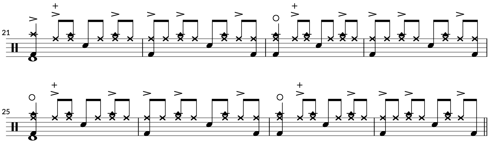

Transcription: “Feeling This” — Travis Barker with Blink-182
Posted on Febuary 17, 2021

Yeah yeah, this song’s been done dozens of times, but I took a shot at it a few years ago and I figured I’d share it. “Feeling This” is often considered a modern day drumming classic — it’s not hard to see why. “Feeling This” is one of the best songs Blink-182 ever did; just listen to the ending vocals in isolation to see the band’s Studio MagicTM at work.
The tune has one of the most famous drum intros of any 21st-Century song. Travis has admitted that much of the intro was inspired by famous John Bonham licks: you can see Bonham triplets, snare/hi hat accents à la “Rock and Roll”, and fast kick drum doubles.
Travis launches into a busy groove to drive the song. The syncopation may seem arbitrary, but notice how it lines up with the parts from the rest of the band:
The chorus looks a bit ridiculous on paper, and has indeed confounded many drummers for years:
The rub is in the cowbell; normally, drummers place cowbells by their ride cymbal. Travis apparently set his up to the left of his hi hat, like an auxiliary snare. So the right hand plays steady 8ths, moving from back and forth from the hats to the snare, while the left hand hits the cowbell to follow a clave-style rhythm.
It’s still a tricky groove. If you’re having trouble, just practice the hands at first, without moving around the drums.
The finale sees travis bashing away at his ride. I thought it was a crash at first, but after a close listen I started to hear some ride taps in there. I watched some live versions to double check, and it sure looks like he sticks to his 21 inch Sweet Ride during the outro, bouncing between quarters and accented 8ths. The Sweet Ride has a very crash-y sound to it, leading to my confusion. There’s also a tambourine that covers up some of the ride sound.
There are some ferocious 16th notes fills during the outro, reminiscent of the big fill from “Hey Joe” that occurs right before the guitar solo. There’s also a brief linear lick that Travis dishes out during the outro. I think it was ad-libbed on the spot:
Aside from the playing, listen to the production of the drums. There are at least four very distinct drum tones throughout the song. The intro and the verses are the same, with the first 8 bars sent through a flanger. Not a digital flanger, apparently they used actual tape flanging. I’m not exactly sure how they did it; I suspect that they sent the drums from Pro Tools to a tape machine to create the effect, but it’s possible that they double tracked the drums with two tape machines.
The chorus drums almost sound like they’re MIDI, or perhaps an electric kit — everything sounds squashed and thin, especially the hi hat. There’s certainly at least an electric bass drum added in the full mix. The post–chorus and bridge are soaked in reverb and compression, á la “When the Levee Breaks”, while the outro is pretty straightforward, a bit dryer than the verses with a different snare tone.
You can listen to the isolated drums to get the full picture. Also notice how the drums abruptly end at the 2:44 mark. I guess they just looped an earlier part of the outro for the fadeout. As a fun piece of trivia, everything was supposed to fadeout together, but the engineer forgot to fade the vocal tracks during the mixdown; the band liked the effect and left it in.
“Feeling This” on Spotify and Apple Music.
Tags: 2021 • Transcription • Travis Barker • Blink-182